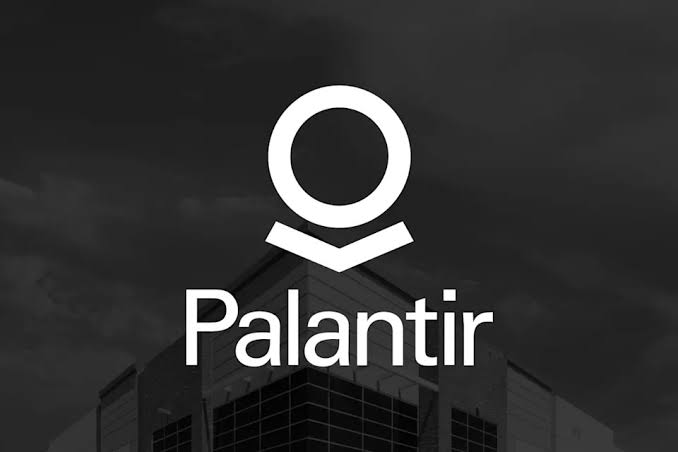
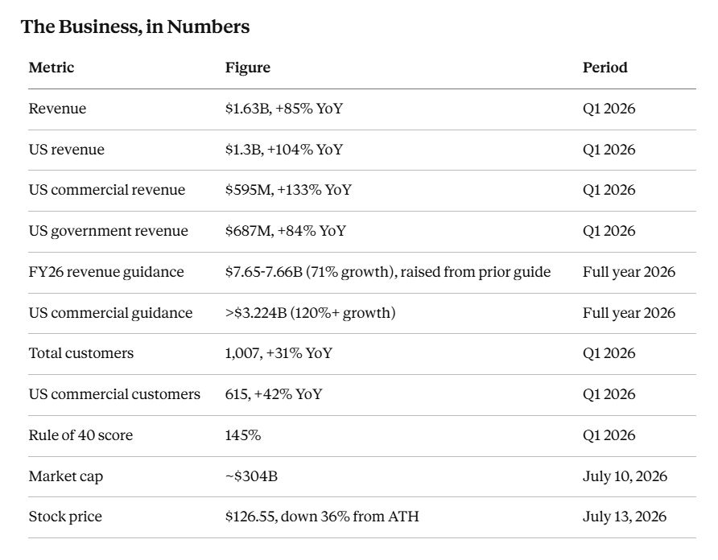
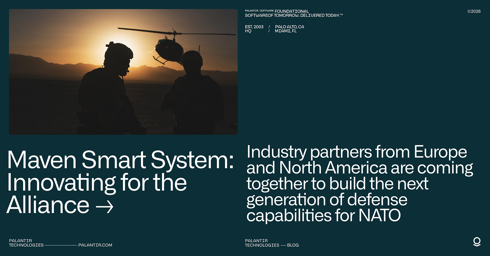
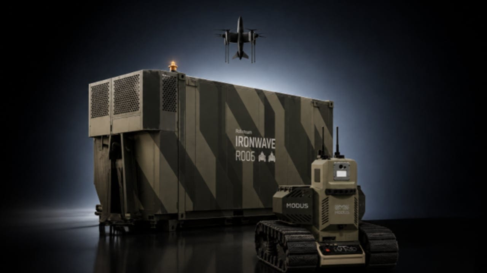

Palantir trades near $125 in mid July, down 36% from its February all-time high of $207.52 and sitting near the middle of a 52-week range that runs from $106.37 to that same high. The stock lost a third of its value in the first half of 2026 on nothing more than valuation math and sector rotation. Revenue is up 85% year over year and guidance keeps rising. That gap between the stock chart, the business results, and the future use case are the primary reasons The Zero Hour Group is covering the stock now.
Palantir carries a $304 billion market cap, more than every other name ZHG will cover in our current article pipeline combined, several times over. The point of covering Palantir early in our article cycle is due to the the ecosystem it is cultivating in defense. Palantir sits at the center of the government AI adoption curve, and its contracts, partnerships, and even its own accreditation infrastructure are pulling smaller defense-tech names into the same government pipeline. Understand Palantir’s position and you understand why Anduril, Ondas, and a growing list of names ZHG will cover next quarter are investable at all.
Figures pulled from Palantir’s Q1 2026 earnings release and July trading data. Sources linked below.
Rule of 40 measures growth rate plus profit margin, and a score above 40 marks a healthy software business. Palantir’s 145 puts it in the same company as Nvidia, Micron, and SK Hynix, the chip names carrying the AI infrastructure buildout. That comparison matters more than any single contract win, because it tells you Wall Street already treats Palantir as the infrastructure for the AI era.

The Government AI Adoption Curve
Palantir’s Maven Smart System started as a Pentagon pilot in 2017 under Project Maven. It now runs as a program of record, a designation the Department of Defense made official in 2026, with management authority moving from the National Geospatial-Intelligence Agency to the Chief Digital and AI Office within 30 days of that switch. More than 20,000 active users across 35-plus military service and combatant command tools now touch Maven, a user base that has more than doubled since January.

The contract trail behind that adoption tells its own story. Palantir signed a five-year, $480 million Army contract for Maven in 2024, added about $100 million in follow-on work the same year, then received a 2025 modification worth up to $795 million for continued support and licensing. By 2026, the Army folded about 75 separate contracts into one enterprise agreement carrying a $10 billion ceiling over ten years, the largest single deal in Palantir’s history. NATO and the UK have each signed on for their own Maven deployments, extending the same software stack to allied militaries.
Golden Dome is the next rung up. President Trump announced the missile defense shield in May, with program cost estimates running from $175 billion to $185 billion depending on the source and the scope counted. Palantir and Anduril are building the software core together meant to network sensors and interceptors across the shield, and both companies sit among nine firms that split an initial $151 billion contract tranche alongside Lockheed Martin, Redwire, and Firefly Aerospace. Testing on the software layer is planned for this summer.
Beyond defense, Palantir holds a $1 billion software purchase agreement with the Department of Homeland Security signed in February, more than $81 million in ICE contracts since January 2025 including a $30 million ImmigrationOS prototype, and upward of $180 million in IRS payments since 2018 across 26 separate contracts. The IRS work has drawn scrutiny over tax-data privacy, a risk worth watching alongside the wins.
Where the Halo Effect Gets Literal
“Halo effect” is normally a vague sentiment spillover: one hot stock making an entire sector feel more legitimate to investors who haven’t done the underlying work. Palantir’s version is concrete. The company built FedStart, a program that hands smaller software firms access to Palantir’s own FedRAMP authorization and Department of Defense Impact Level accreditation, cutting years off the normal path to a federal contract. SpecterOps used FedStart to become the first public startup to sell through the program. Virtualitics and, as of June 2026, Oligo Security followed the same path into federal accounts they couldn’t have reached alone.
That’s the mechanism sitting underneath every “PLTR halo” headline. Smaller companies plug directly into Palantir’s own accreditation and infrastructure to reach federal customers they couldn’t reach alone.
The Anduril relationship works the same way at a larger scale. The two companies announced a consortium in December 2024 aimed at building AI infrastructure “from the edge to the enterprise” for national security customers, and Golden Dome turned that partnership into the two most-discussed names in the entire missile-shield program. When Anduril landed its own $20 billion, ten-year Army contract to unify commercial and defense AI into one ecosystem, analysts called it a “positive read-through” for Palantir, since the two companies’ software stacks are built to interlock rather than compete.
Ondas is the clearest example of Palantir extending that same pattern to a name ZHG readers already track. Palantir, Ondas, and World View announced a partnership in March 2026 to fuse World View’s high-altitude Stratollite platforms with Ondas’ drone and counter-drone systems, all coordinated through Palantir’s Artificial Intelligence Platform. The deal targets persistent ISR across defense, homeland security, and critical infrastructure customers, spanning stratosphere, air, and land in one coordinated fleet. Ondas gets Palantir’s software layer and the credibility that comes with appearing in the same press release. Palantir gets a hardware partner it doesn’t have to build itself. Booz Allen Hamilton signed a similar co-creation partnership in December 2024, aimed at coalition-partner interoperability and information infrastructure work that neither company could sell alone.

None of this is charity. Palantir needs hardware partners and smaller software vendors to make its platform useful across every domain the Pentagon cares about, and it gets paid either way. But the practical effect for investors tracking this sector is the same regardless of motive: a name that partners with Palantir, or plugs into FedStart, has already cleared a bar that would otherwise take years and tens of millions of dollars to clear alone.
What Wall Street Sees
Wall Street’s consensus sits well above where the stock trades today. S&P Global’s tracker of 32 analysts averages $183, with a broader compilation putting the mean closer to $181-194. DA Davidson’s Gil Luria upgraded the stock to Buy this month and raised his target to $175. Wedbush’s Dan Ives carries the high case on the bull side at $230, implying more than 75% upside from current levels.
The bear case exists too, and it comes from credible desks, not just internet skeptics. Citron has called the valuation unsustainable with a $40 target, and Michael Burry has disclosed a short position and taken a public victory lap as the stock cooled from its February peak. Individual targets across all trackers span a wide $70-$255 range, evidence that analysts disagree sharply on how much of Palantir’s growth is already priced in.
Palantir trades at a trailing P/E above 140 and a forward price-to-sales ratio in the 55-75x range depending on the day, multiples that price in years of continued 70%+ growth. That gap between the bull and bear price targets reflects a real disagreement over whether Golden Dome and Maven convert to durable revenue on schedule, or whether the stock has already run ahead of what any of these programs can deliver in the next few years.
What to Watch
Three things sit on the risk side of this thesis. First, insider selling. CEO Alex Karp has sold more than $4 billion in shares across 2024 and 2025, including a $66 million sale in February, and six insiders sold a combined $130 million in a 90-day window ending in May with zero open-market purchases recorded. Founders selling under 10b5-1 plans is normal at this stage of a company’s life, but the total dollar figure and the zero-purchase count are both worth tracking going forward.
Second, the NHS contract in the UK. Palantir’s £330 million Federated Data Platform deal runs through an initial term ending in 2027, and a parliamentary committee report calling the company’s UK public-sector footprint “an unacceptable point of weakness” has put a break clause on the table for next spring. Losing that account wouldn’t dent Palantir’s revenue much on its own, but it would hand critics of the government-AI thesis a headline they don’t have yet.
Third, sector rotation. Some traders have started calling the broader software selloff the “SaaSpocalypse,” driven by fear that AI agents erode the subscription-software model across the board. Palantir gets swept into that repricing regardless of what its own government contracts are doing, which is what happened in the first half of 2026.
Sources
Yahoo Finance / BusinessWire: Palantir Reports Q1 2026 Revenue Growth, Raises FY 2026 Guidance
Capital.com: Palantir Technologies Market Cap – July 2026 Update
MarketBeat: Palantir Technologies (PLTR) Stock Forecast and Price Target
TipRanks: Palantir Technologies Stock Forecast, Price Targets and Analysts Predictions
Anduril: Anduril and Palantir to Accelerate AI Capabilities for National Security
Investing.com: Anduril’s $20 billion U.S. Army win offers “positive read-through” for Palantir
GovConWire: Anduril, Palantir Help Advance Golden Dome Software
CNBC: Redwire stock rockets after joining $151 billion Golden Dome contract
Booz Allen Hamilton: Booz Allen and Palantir Partner to Advance and Accelerate U.S. National Defense
BusinessWire: Oligo Security Joins Palantir’s FedStart Program
DefenseScoop: “Growing demand” sparks DOD to raise Palantir’s Maven contract to more than $1B
Military.com: Pentagon Expands Use of Palantir AI in New Defense Contract
The Motley Fool: Better Defense Stock to Own in 2026: PLTR vs. LMT
Yahoo Finance / Reuters: Palantir Landed Its Next $1 Billion Deal
Engadget: The UK will review its NHS contract with US software firm Palantir
AInvest: Insider Selling at Palantir Technologies: Investor Sentiment and Valuation Risks in Focus
BasisReport: Palantir Insiders Dump $130M Amid AI Valuation Debate
The Motley Fool: Why Palantir Stock Plunged 34% in the First Half of 2026